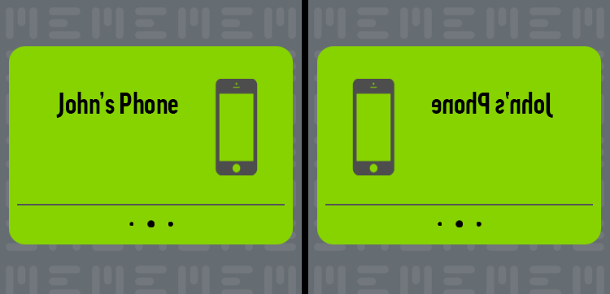

Is My MEEM Backing Up?

As soon as you have confirmed your PIN, MEEM will begin to back up the contents of your phone. The app will go through three stages during the backup process and these stages will be displayed at the top of the screen:
- Confirming Data: MEEM is confirming the total amount of data on your device and checking for any new data or backup up data that you’ve deleted. You will initially see Confirming Data appear at the top of the screen (A), followed by the appearance of a counter (B). It will note the category it is currently checking and whether it is checking the data on the Phone or on the MEEM. For instance when it says Contacts in phone ### / #### (B) it is checking the photos on your phone to confirm what is there to be backed up. When it says Contacts in MEEM ### / #### (C) it is then checking the photos on the MEEM cable and copying over any new items or deleting photos you have deleted to the MEEM cable. This will occur for all categories and allows you to track the progress of your backup.


- Transferring Data: your data is being backed up onto the cable

- Finalizing: MEEM is completing the backup and will be ending shortly

- After the backup is complete Home will appear at the top of the screen.
To view the backed-up content, tap on the Menu icon followed by Your data. Within the Your data you will be able to tap on each category and view backed up content within.